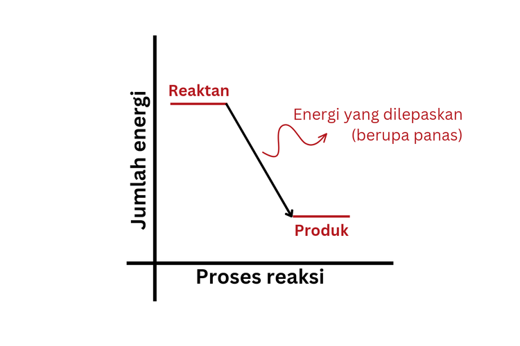
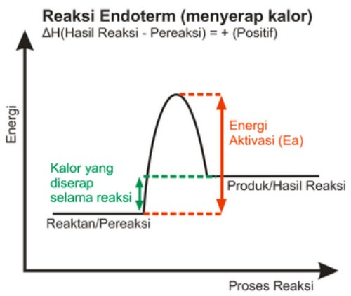

Termokimia
Termokimia adalah cabang ilmu kimia yang mempelajari hubungan antara energi, terutama dalam bentuk panas, dan reaksi kimia. Fokus utama dari termokimia adalah bagaimana energi ditransfer selama reaksi kimia dan perubahan fisik, serta bagaimana energi ini mempengaruhi sifat dan perilaku zat.
Penerapan Termokimia dalam kehidupan sehari-hari
1. Memasak Makanan
2. Pembakaran Bahan Bakar
Pembakaran bahan bakar seperti bensin atau gas alam dalam mesin kendaraan adalah contoh reaksi eksotermik. Energi yang dilepaskan selama pembakaran digunakan untuk menggerakkan kendaraan. Reaksi ini juga menghasilkan gas buang yang berkontribusi pada polusi udara.3. Pendinginan dengan Es
Ketika es mencair, ia menyerap panas dari lingkungan sekitarnya. Proses ini adalah contoh dari perubahan entalpi positif, di mana energi diperlukan untuk mengubah es menjadi air. Ini adalah prinsip dasar di balik pendinginan dengan es dalam minuman.4. Reaksi Kimia dalam Penyimpanan Energi
Baterai menyimpan energi kimia yang dapat diubah menjadi energi listrik saat digunakan. Proses ini melibatkan reaksi redoks yang menghasilkan energi. Contohnya adalah baterai lithium-ion yang digunakan dalam ponsel dan laptop.5. Proses Fotosintesis
Fotosintesis adalah proses di mana tumbuhan mengubah energi matahari menjadi energi kimia dalam bentuk glukosa. Proses ini melibatkan reaksi kimia yang menyerap energi, dan merupakan contoh penting dari termokimia dalam ekosistem.Jenis Sistem Termokimia
Ada dua jenis sistem termokimia yang umum digunakan dalam studi termokimia, yaitu sistem terbuka dan sistem tertutup. Sistem terbuka adalah sistem di mana energi dapat ditransfer antara sistem dan lingkungan sekitarnya, sedangkan sistem tertutup adalah sistem di mana energi tidak dapat ditransfer antara sistem dan lingkungan.
Contoh Sistem Terbuka:
Reaksi kimia yang terjadi di dalam bejana terbuka, di mana panas dapat ditransfer antara reaksi dan lingkungan sekitarnya.
Contoh Sistem Tertutup:
Reaksi kimia yang terjadi di dalam termos, di mana panas tidak dapat ditransfer antara reaksi dan lingkungan sekitarnya.
Reaksi Eksoterm dan Endoterm dalam Termokimia
1.Reaksi Eksoterm
Reaksi eksoterm adalah reaksi kimia yang melepaskan energi panas ke lingkungan sekitarnya. Contoh reaksi eksoterm adalah pembakaran kayu, di mana energi panas dilepaskan dalam bentuk api dan asap.
Karakteristik
- Perubahan entalpi negatif
- Panas dilepaskan ke lingkungan
- Energi potensial produk lebih rendah dari reaktan
2.Reaksi Endoterm
Reaksi endoterm adalah reaksi kimia yang memerlukan energi panas dari lingkungan sekitarnya. Contoh reaksi endoterm adalah penguapan air, di mana energi panas diperlukan untuk mengubah air menjadi uap.
Karakteristik
- Perubahan entalpi positif
- Panas diserap dari lingkungan
- Energi potensial produk lebih tinggi dari reaktan
Perubahan Entalpi dalam Keadaan Standar
1.Perubahan Entalpi Pembentukan Standar (ΔH°f)
Perubahan entalpi pembentukan standar (ΔH°f) adalah perubahan entalpi yang terjadi saat satu mol senyawa terbentuk dari unsur-unsur konstituennya dalam keadaan standar. Nilai ΔH°f digunakan untuk menghitung perubahan entalpi reaksi.
Contoh Reaksi Pembentukan Standar:
2H2(g) + O2(g) → 2H2O(l) ΔH = -572 kJ/mol
CH4(g) + 2O2(g) → CO2(g) + 2H2O(l) ΔH = -890 kJ/mol
2.Perubahan Entalpi Penguraian Standar
Perubahan entalpi penguraian standar (ΔH°d) adalah perubahan entalpi yang terjadi saat satu mol senyawa terurai menjadi unsur-unsurnya dalam keadaan standar. Nilai ΔH°d dapat digunakan untuk menghitung perubahan entalpi reaksi.
Contoh Reaksi Penguraian Standar:
2H2O(l) → 2H2(g) + O2(g) ΔH = 572 kJ/mol
CO2(g) + 2H2O(l) → CH4(g) + 2O2(g) ΔH = 890 kJ/mol
3.Perubahan Entalpi Pembakaran Standar
Perubahan entalpi pembakaran standar (ΔH°c) adalah perubahan entalpi yang terjadi saat satu mol senyawa terbakar sempurna dalam keadaan standar. Nilai ΔH°c dapat digunakan untuk menghitung perubahan entalpi reaksi.
Contoh Reaksi Pembakaran Standar:
CH4(g) + 2O2(g) → CO2(g) + 2H2O(l) ΔH = -890 kJ/mol
C2H5OH(l) + 3O2(g) → 2CO2(g) + 3H2O(l) ΔH = -1367 kJ/mol
4.Perubahan Entalpi Pelarutan Standar
Perubahan entalpi pelarutan standar (ΔH°s) adalah perubahan entalpi yang terjadi saat satu mol senyawa terlarut dalam jumlah berlebihan air dalam keadaan standar. Nilai ΔH°s dapat digunakan untuk menghitung perubahan entalpi reaksi.
Contoh Reaksi Pelarutan Standar:
NaCl(s) → Na+(aq) + Cl-(aq) ΔH = 411 kJ/mol
CaCl2(s) → Ca2+(aq) + 2Cl-(aq) ΔH = 815 kJ/mol